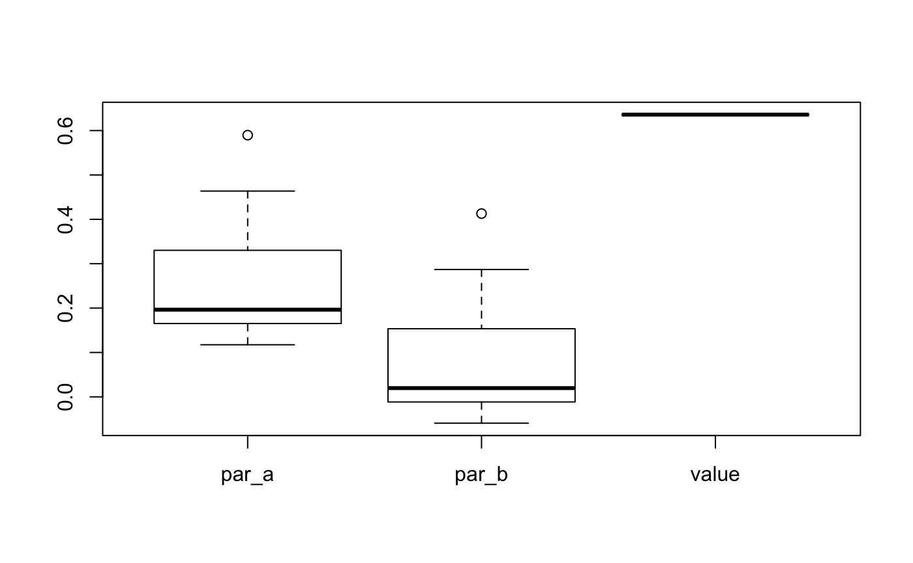

Parametric estimation
Peter Solymos
edma03-parametric.RmdThis section describes how to assess if SigmaK is esimable.
The pattern matrix describes the unknowns in the SigmaK matrix. Diagonal must be filled. Upper and lower diagonal values must be symmetric or NA. The file can be created in R, or loaded as a csv or Excel (xls, xlsx) file:
library(EDMAinR)
#> EDMAinR 0.1-0 2019-12-27
read_pattern(system.file("extdata/example.csv", package="EDMAinR"))
#> a b c
#> a "1" "2" NA
#> b "2" "1" NA
#> c NA NA "1"
read_pattern(system.file("extdata/example.xlsx", package="EDMAinR"))
#> a b c
#> a "1" "2" NA
#> b "2" "1" NA
#> c NA NA "1"Now we go ahead with a simulated example:
m <- matrix(c(
"a", NA, NA, NA,
NA, "a", NA, NA,
NA, NA, "b", NA,
NA, NA, NA, "b"
), 4, 4, byrow=TRUE)
parm <- c(a=0.25, b=0.35)
M <- structure(c(-2.5, 7.5, -2.5, -2.5, -7.5, 2.5, 2.5, 4.5),
.Dim = c(4L, 2L))
SigmaK <- EDMAinR:::.vec2mat(parm, EDMAinR:::.mat2fac(m))
sim <- edma_simulate_data(n=500, M, SigmaK)
dimnames(M) <- dimnames(sim$data[[1L]])
rownames(SigmaK) <- rownames(m) <- rownames(sim$data[[1L]])
colnames(SigmaK) <- colnames(m) <- rownames(sim$data[[1L]])This simulated example has 2 unknowns: a and b, now we estimate these:
fit <- edma_fit(sim)
o <- SigmaK_fit(fit, m)
o
#> EDMA parametric fit: Simulated landmark data
#> Call: SigmaK_fit(object = fit, pattern = m)
#> 2 dimensions, 4 landmarks, 500 replicates, no bootstrap
cbind(true=parm, est=o$results$par)
#> true est
#> a 0.25 0.2545125
#> b 0.35 0.3216170
SigmaK(o)
#> L1 L2 L3 L4
#> L1 0.2545125 0.0000000 0.000000 0.000000
#> L2 0.0000000 0.2545125 0.000000 0.000000
#> L3 0.0000000 0.0000000 0.321617 0.000000
#> L4 0.0000000 0.0000000 0.000000 0.321617To check the sensitivity, we can re-estimate SigmaK matrix multiple times with random starting values for numerical optimization. When estimates vary while the loss function value is the same, it is usually a sign of non-identifiability.
s <- sensitivity(o)
summary(s)
#> par_a par_b value
#> Min. :0.2545 Min. :0.3216 Min. :1.064
#> 1st Qu.:0.2545 1st Qu.:0.3216 1st Qu.:1.064
#> Median :0.2545 Median :0.3216 Median :1.064
#> Mean :0.2545 Mean :0.3216 Mean :1.064
#> 3rd Qu.:0.2545 3rd Qu.:0.3216 3rd Qu.:1.064
#> Max. :0.2545 Max. :0.3216 Max. :1.064
boxplot(s)
Now let’s try a non identifiable pattern. The function is pretty smart to let us know, but we will disable such checks, so that we can demonstrate how do estimates and loss function value looks like in this case: lots of different values can lead to the same value
m <- matrix(c(
"a", "b", "b", "b",
"b", "a", "b", "b",
"b", "b", "a", "b",
"b", "b", "b", "a"
), 4, 4, byrow=TRUE)
parm <- c(a=0.25, b=0.07)
M <- structure(c(-2.5, 7.5, -2.5, -2.5, -7.5, 2.5, 2.5, 4.5),
.Dim = c(4L, 2L))
SigmaK <- EDMAinR:::.vec2mat(parm, EDMAinR:::.mat2fac(m))
sim <- edma_simulate_data(n=500, M, SigmaK)
dimnames(M) <- dimnames(sim$data[[1L]])
rownames(SigmaK) <- rownames(m) <- rownames(sim$data[[1L]])
colnames(SigmaK) <- colnames(m) <- rownames(sim$data[[1L]])
fit <- edma_fit(sim)
try(SigmaK_fit(fit, m))
#> Error in .check_pattern(object, pattern) :
#> number of nonzero cells (16) in pattern matrix must be <= 6
o <- SigmaK_fit(fit, m, check_pattern=FALSE)
o
#> EDMA parametric fit: Simulated landmark data
#> Call: SigmaK_fit(object = fit, pattern = m, check_pattern = FALSE)
#> 2 dimensions, 4 landmarks, 500 replicates, no bootstrap
cbind(true=parm, est=o$results$par)
#> true est
#> a 0.25 0.2923992
#> b 0.07 0.1156618
SigmaK(o)
#> L1 L2 L3 L4
#> L1 0.2923992 0.1156618 0.1156618 0.1156618
#> L2 0.1156618 0.2923992 0.1156618 0.1156618
#> L3 0.1156618 0.1156618 0.2923992 0.1156618
#> L4 0.1156618 0.1156618 0.1156618 0.2923992
s <- sensitivity(o)
summary(s)
#> par_a par_b value
#> Min. :0.1174 Min. :-0.05933 Min. :0.6358
#> 1st Qu.:0.1652 1st Qu.:-0.01149 1st Qu.:0.6358
#> Median :0.1965 Median : 0.01974 Median :0.6358
#> Mean :0.2668 Mean : 0.09009 Mean :0.6358
#> 3rd Qu.:0.3302 3rd Qu.: 0.15346 3rd Qu.:0.6358
#> Max. :0.5896 Max. : 0.41291 Max. :0.6358
boxplot(s)